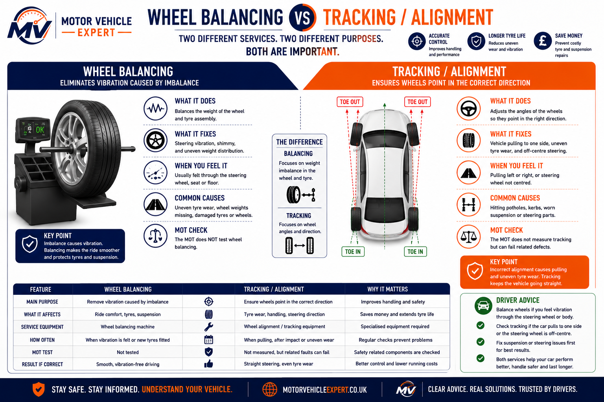
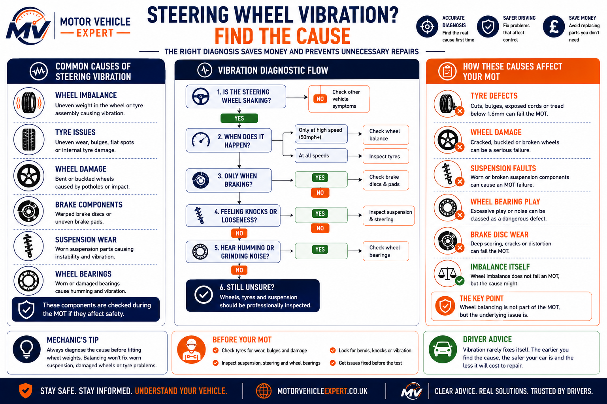

Wheel Imbalance
Not CheckedThe MOT does not use balancing equipment or check wheel weight distribution.
No. An MOT does not check wheel balancing with specialist tyre-shop equipment. The tester does not remove the wheels, spin them on a balancing machine, measure imbalance or fit wheel weights during the MOT.
However, vibration should never be ignored. A steering wheel shake that feels like wheel imbalance may actually be caused by a damaged tyre, buckled wheel, loose wheel bearing, worn suspension joint, brake disc problem or unsafe steering component.
This guide explains what the MOT does and does not check, the difference between balancing, tracking and alignment, when vibration becomes an MOT risk, what to inspect before test day and typical UK repair costs.
Wheel balancing itself is not an MOT test item, but the cause of vibration can matter. Tyre damage, wheel cracks, excessive wheel bearing play, steering faults and worn suspension components can all affect roadworthiness.
Wheel balancing is not measured during an MOT, but vibration can point to faults that are checked.
The MOT does not use balancing equipment or check wheel weight distribution.
Bulges, exposed cords, cuts or illegal tread can fail even if the vibration feels like balancing.
Serious wheel damage can affect safety, tyre seating and wheel security.
Excessive play, roughness or noise can become a safety-related MOT defect.
Loose suspension or steering parts can cause vibration and affect roadworthiness.
Vibration only when braking may point to brake disc or braking system problems.
Do not assume every vibration is wheel balancing. Check tyres, wheels, brakes, wheel bearings, steering and suspension first. Balancing only fixes vibration caused by wheel and tyre weight imbalance.
No. Wheel balancing is not directly checked during an MOT. MOT testers do not use balancing machines, remove wheels to spin them, measure imbalance or fit wheel weights as part of the test.
A car can pass an MOT with an unbalanced wheel if the tyres, wheels, steering, suspension, brakes and wheel bearings are otherwise safe and roadworthy.
The important point is that vibration should not be ignored. A vibration that feels like simple wheel imbalance may actually be caused by tyre damage, a buckled wheel, brake disc issues, worn suspension, steering play or wheel bearing wear.
Wheel balancing itself is not an MOT test item. The underlying cause of vibration may still matter if it affects safety, tyre condition, steering, suspension, wheels or wheel bearings.
If your steering wheel shakes at motorway speeds, the tester is unlikely to diagnose wheel balance during the MOT. But if the inspection finds a tyre bulge, exposed cords, cracked wheel, excessive wheel bearing play, steering defect or suspension wear, those defects can affect the result.
So the correct answer is: wheel balancing itself will not fail an MOT, but dangerous tyre, wheel, steering, suspension or bearing defects linked to vibration can fail.
Balance the wheels only after checking the tyre and wheel are safe. Balancing will not fix a damaged tyre, buckled wheel, worn bearing, warped brake disc or loose suspension joint.
This infographic explains why wheel balancing is not included in the MOT. While the MOT checks tyres, wheels, steering, suspension and wheel bearings for roadworthiness, professional wheel balancing uses specialist equipment to identify weight imbalance and eliminate steering wheel vibration.
Wheel balancing removes vibration caused by uneven weight distribution around the wheel and tyre assembly. It improves ride comfort, protects suspension components and helps tyres wear more evenly, but it is a maintenance procedure rather than part of the legal MOT inspection.
Wheel balancing is carried out using specialist balancing equipment after tyres are fitted or when vibration develops. The MOT concentrates on whether the tyres, wheels, steering and suspension are safe—not whether the wheels are perfectly balanced.
A correctly balanced wheel rotates evenly with almost no vibration. The weight is distributed evenly around the complete wheel and tyre assembly.
An unbalanced wheel commonly causes steering wheel shake, seat vibration or body vibration, usually becoming noticeable between 50–70 mph.
A balancing machine identifies heavy spots before small adhesive or clip-on wheel weights are fitted to eliminate vibration.

This infographic highlights the key differences between wheel balancing, wheel tracking and the MOT inspection. Wheel balancing corrects uneven weight distribution to eliminate vibration, while wheel tracking adjusts the direction of the wheels to improve handling and reduce tyre wear. The MOT does not measure either procedure, but it does inspect tyres, wheels, steering, suspension and other roadworthiness-related components that can contribute to vibration or uneven tyre wear.
The MOT is a roadworthiness inspection rather than a maintenance service. Testers examine tyres, wheels, steering, suspension, wheel bearings and braking components because these directly affect safety. Specialist tyre-shop procedures such as wheel balancing, wheel alignment and tracking adjustments are outside the scope of the MOT.
| Item | MOT Checks? | Purpose |
|---|---|---|
| Wheel balancing | No | Removes vibration caused by uneven wheel weight. |
| Wheel tracking | No | Adjusts steering alignment and tyre direction. |
| Wheel alignment | No | Sets manufacturer suspension geometry. |
| Tyre condition | Yes | Checks tread depth, damage and roadworthiness. |
| Wheel security | Yes | Ensures wheels are secure and safe. |
| Wheel bearings | Yes | Checks excessive play and roughness. |
| Steering & suspension | Yes | Checks safety-critical components. |
If vibration suddenly appears after hitting a pothole, do not automatically book wheel balancing. First inspect the tyres, wheels, suspension and steering for damage, because many MOT failures that feel like balancing problems are actually caused by worn or damaged safety-critical components.
Wheel imbalance usually causes vibration rather than an MOT failure on its own. However, many of the same symptoms can also indicate tyre, steering, wheel bearing, brake or suspension faults that should be investigated before the MOT.
Many drivers assume every steering wheel vibration is caused by wheel balancing. In reality, damaged tyres, buckled wheels, worn suspension components, warped brake discs or failing wheel bearings can produce almost identical symptoms.
A vibration through the steering wheel at motorway speeds is one of the most common signs of front wheel imbalance.
Rear wheel imbalance is often felt through the driver's seat or vehicle floor rather than through the steering wheel.
Wheel imbalance usually becomes noticeable within a specific speed range before reducing again.
Abnormal tyre wear may point to balancing, tracking, incorrect tyre pressure or suspension faults.
Losing a wheel weight after tyre fitting or striking a pothole can create sudden vibration.
A pothole can damage the tyre, buckle the wheel, knock out the tracking or wear suspension components.

Wheel imbalance is only one possible cause of vibration. This diagnostic infographic compares damaged tyres, buckled wheels, worn wheel bearings, brake disc faults, steering wear and suspension defects to help identify the true source before replacing parts or booking an MOT.
| Symptom | Possible Cause | MOT Relevance |
|---|---|---|
| Steering wheel shakes at speed | Front wheel imbalance or tyre defect | Tyre defects may fail |
| Seat vibration | Rear wheel imbalance | Normally not balancing itself |
| Vibration only when braking | Brake discs or braking system | Brakes are inspected |
| Constant vibration at all speeds | Wheel bearing or suspension | Possible MOT failure |
| Pulling to one side | Tracking, tyres or suspension | Related faults may fail |
| Knocking over bumps | Suspension or steering wear | Safety-related MOT item |
If balancing the wheels does not remove the vibration, stop replacing wheel weights and investigate the tyres, wheel bearings, suspension, steering and brake discs. These faults are much more likely to affect the MOT than wheel balancing itself.
Wheel balancing itself is not normally an MOT failure. The real risk is assuming every vibration is only a balancing issue when the cause may be a tyre, wheel, bearing, brake, steering or suspension defect.
An MOT does not measure wheel balance. However, defects that cause vibration can still fail if they affect tyre condition, wheel security, steering, suspension, braking or wheel bearing safety.
Imbalance is not measured during the MOT and is usually treated as a comfort or maintenance issue.
Bulges, cords, cuts, unsafe tread depth or serious tyre defects can fail regardless of balancing.
Excessive wheel bearing, steering or suspension play can affect roadworthiness and control.
| Problem | Direct MOT fail? | Why it matters | Best action |
|---|---|---|---|
| Wheel imbalance only | No | Not measured during the MOT | Balance wheels if vibration is present |
| Lost wheel weight | No | Can cause vibration but is not usually a fail item itself | Have the wheel balanced |
| Tyre bulge | Yes | Dangerous tyre defect | Replace tyre immediately |
| Exposed tyre cords | Yes | Illegal and dangerous tyre condition | Do not keep driving |
| Buckled or cracked wheel | Possible | May affect safety, tyre seating or wheel security | Inspect and repair or replace |
| Loose wheel bearing | Often | Excessive play can be unsafe | Repair before MOT |
| Worn suspension joint | Often | Can affect control, tyre wear and roadworthiness | Repair before MOT |
| Brake disc vibration | Possible | May indicate braking defects | Inspect brakes properly |
If the car only vibrates at motorway speeds and the tyres are safe, wheel balancing may solve it. If vibration is constant, appears after a pothole, happens when braking, comes with knocking noises or is linked to uneven tyre wear, inspect the whole wheel, tyre, steering, suspension and braking system before the MOT.
Wheel balancing fixes vibration caused by uneven wheel and tyre weight. Tracking and alignment correct the direction and angle of the wheels. They solve different problems and are not checked in the same way during an MOT.
If the steering wheel shakes at speed, think wheel balancing, tyre damage, wheel damage or wheel bearings. If the car pulls left or right, the steering wheel is off-centre or tyre edges are wearing quickly, think tracking, alignment, suspension or steering faults.
Wheel balancing is about how evenly the wheel and tyre assembly rotates. If one part of the assembly is heavier than the rest, the wheel can vibrate at speed.
Tracking and alignment are about the direction and angle of the wheels. Poor alignment can make the car pull, cause an off-centre steering wheel or wear tyre edges quickly.
Wheel balancing corrects uneven weight distribution in the wheel and tyre assembly to reduce vibration, while wheel tracking adjusts wheel direction and alignment. Neither procedure forms part of the MOT, although tyre, wheel, steering and suspension defects discovered during the inspection can result in an advisory or MOT failure.
| Symptom | Most likely area | MOT relevance | Best next step |
|---|---|---|---|
| Steering wheel shakes at 50-70 mph | Wheel balance, tyre or wheel issue | Balancing not checked, tyre/wheel defects can matter | Inspect tyre and wheel, then balance if safe |
| Car pulls left or right | Tracking, tyre, brake or suspension fault | Related steering/suspension/tyre defects can fail | Inspect tyres, brakes and suspension before alignment |
| Steering wheel off-centre | Tracking or alignment | Not a direct alignment check | Check for worn steering or suspension parts first |
| Inner tyre edge worn | Tracking, camber or suspension wear | Tyre may fail if worn below legal limit or cords exposed | Inspect tyre fully before MOT |
| Vibration only when braking | Brake discs or braking system | Brakes are checked during MOT | Inspect brakes, not just wheel balance |
| Humming or rumbling noise | Wheel bearing or tyre wear | Wheel bearing play can fail | Inspect bearing, tyre and wheel condition |
Use wheel balancing when vibration appears at speed and tyres, wheels and bearings are safe.
Use tracking or alignment when the car pulls, the steering wheel is off-centre or tyre edges wear quickly.
The MOT does not balance or align wheels, but it checks tyres, wheels, steering, suspension and bearings.
Inspect the tyres, wheels, wheel bearings, brakes, steering joints and suspension first. Balancing or tracking a car with damaged tyres, worn joints or bent wheels can hide the real fault and waste money.
A vibration before an MOT should be treated as a warning sign. Wheel balancing may fix it, but only after tyres, wheels, bearings, brakes, steering and suspension have been checked for safety defects.
Do not balance damaged wheels or unsafe tyres. If you see a tyre bulge, exposed cords, cracked wheel, loose wheel bearing, suspension play or brake vibration, repair the fault before focusing on wheel balancing.
Wheel balancing is common and often inexpensive, but it is not the only cause of vibration.
Tyre damage is more important than vibration comfort. Bulges, exposed cords or illegal tread should be repaired before the MOT.
Wheel bearing noise or play can feel like vibration and may become an MOT failure if excessive.
If the vibration appears mainly under braking, inspect the brakes rather than assuming the wheels need balancing.
The safest approach is to inspect first and balance second. A wheel balance can make a car feel smoother, but it will not make a damaged tyre, cracked wheel, worn bearing or loose suspension joint safe for an MOT.
Wheel balancing is one of the least expensive fixes for steering vibration. However, if the vibration is caused by tyre damage, a buckled wheel, worn wheel bearing or suspension fault, repair costs can increase significantly.
The figures below are broad UK guide prices only. Labour rates, vehicle type, alloy wheel size and the cause of the vibration can all affect the final repair bill.
Ideal after replacing one tyre or when a wheel weight has fallen off.
£10–£25Recommended when vibration affects the whole vehicle or after fitting multiple new tyres.
£40–£90Required if balancing reveals an unsafe tyre with bulges, exposed cords or severe wear.
£60–£200+ per tyreA bent or cracked wheel often causes vibration and may require repair or replacement.
£80–£500+Bearing wear can feel similar to wheel imbalance and may become an MOT failure.
£120–£350+Loose suspension joints or steering components can cause vibration and affect roadworthiness.
£150–£900+| Repair | Typical UK Cost | Usually Needed When |
|---|---|---|
| Single wheel balance | £10–£25 | One wheel has lost a balance weight. |
| Two front wheels balanced | £20–£50 | Steering wheel vibration at speed. |
| Four wheels balanced | £40–£90 | General vibration or after fitting multiple tyres. |
| Wheel alignment / tracking | £40–£100+ | Vehicle pulls or steering wheel sits off-centre. |
| Tyre replacement | £60–£200+ per tyre | Unsafe or excessively worn tyres. |
| Wheel bearing replacement | £120–£350+ | Humming noise or excessive bearing play. |
| Buckled wheel repair/replacement | £80–£500+ | Impact damage from potholes or kerbs. |
| Suspension repair | £150–£900+ | Loose or worn steering and suspension components. |
Paying £40 for wheel balancing is far cheaper than replacing tyres damaged by long-term vibration or repairing worn suspension caused by ignoring the problem. If balancing does not cure the vibration, investigate the tyres, wheels, bearings, steering and suspension rather than repeatedly rebalancing the wheels.
Clear answers to the questions UK drivers most commonly ask about wheel balancing, steering vibration, tyre safety and how these issues relate to the MOT.
No. An MOT does not use balancing equipment or measure whether the wheels are correctly balanced. Wheel balancing is a maintenance procedure carried out by tyre specialists rather than part of the MOT inspection.
Not directly. However, the defects causing vibration—such as damaged tyres, cracked wheels, worn wheel bearings or suspension faults—can lead to an MOT advisory or failure if they affect roadworthiness.
No. Wheel balancing corrects uneven weight distribution around the wheel and tyre assembly, while tracking adjusts the direction the wheels point. They solve different problems and require different equipment.
Wheel imbalance is a common cause, but steering vibration can also be caused by tyre damage, a buckled wheel, worn wheel bearings, suspension wear or brake disc problems. A proper inspection is recommended before replacing parts.
If the vehicle vibrates at speed, have the tyres, wheels and suspension inspected before the MOT. Balancing can improve comfort, but any underlying safety defects should be repaired first.
Yes. A buckled or cracked wheel may fail if it affects wheel security, tyre seating or overall vehicle safety.
Yes. A worn wheel bearing can produce vibration, humming or rumbling noises that are often mistaken for wheel balancing problems. Excessive bearing wear can also become an MOT failure.
Yes. Losing a balance weight can create noticeable steering wheel vibration, particularly between 50 and 70 mph. Rebalancing normally resolves the issue if the tyre and wheel are undamaged.
Correctly balanced wheels reduce vibration and can help tyres wear more evenly, although uneven tyre wear is also commonly caused by incorrect pressures, poor alignment or worn suspension.
No. A vehicle can pass its MOT with slightly unbalanced wheels because balancing is not part of the inspection. A valid MOT only confirms that the vehicle met the required roadworthiness standards on the day it was tested.
If balancing does not solve the problem, inspect the tyres, wheels, wheel bearings, steering components, suspension and brakes. Many vibrations blamed on wheel balancing are actually caused by faults that can affect both driving safety and MOT results.